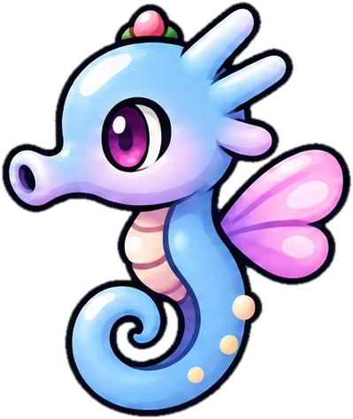

 Water
Water Light
LightTap a stage to read its story.
Seahippo is a tiny sky-blue seahorse with a plump round belly and a pair of soft lavender fins that flutter like flower petals in still water. Its small snout points upward with a hopeful tilt, and its large violet eyes sparkle with reflected light. In the murky poison marsh, Seahippo floats near the surface where sunlight filters through the reed canopy, trailing wisps of clean shimmering water that push the toxic ooze gently aside. Young guardians say it is the marsh's way of offering a kind hello.
Field note: Seahippo can produce a tiny bubble of clean fresh water by clicking its snout - it does this to greet strangers.
Poison Marsh. Seahippo and its family are found in the Poison Marsh. See everyone who lives there.
Share a Bond Food that matches its types to become friends. Seahippo loves:
A Bond Food is not a trick. It joins your spirit with the Kimuro's spirit, and only when it chooses you.
Print the Kimuro adventure packs: mazes, cards, a board game and Bond Mark medals.
See the printable packs